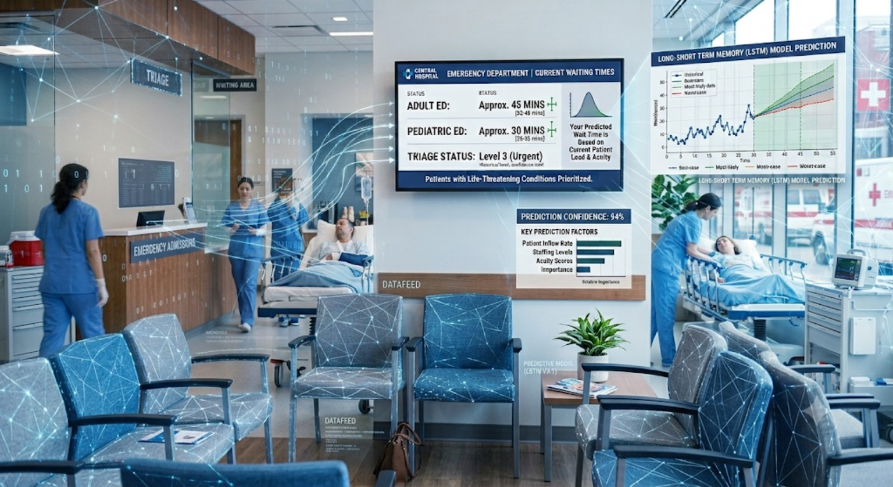
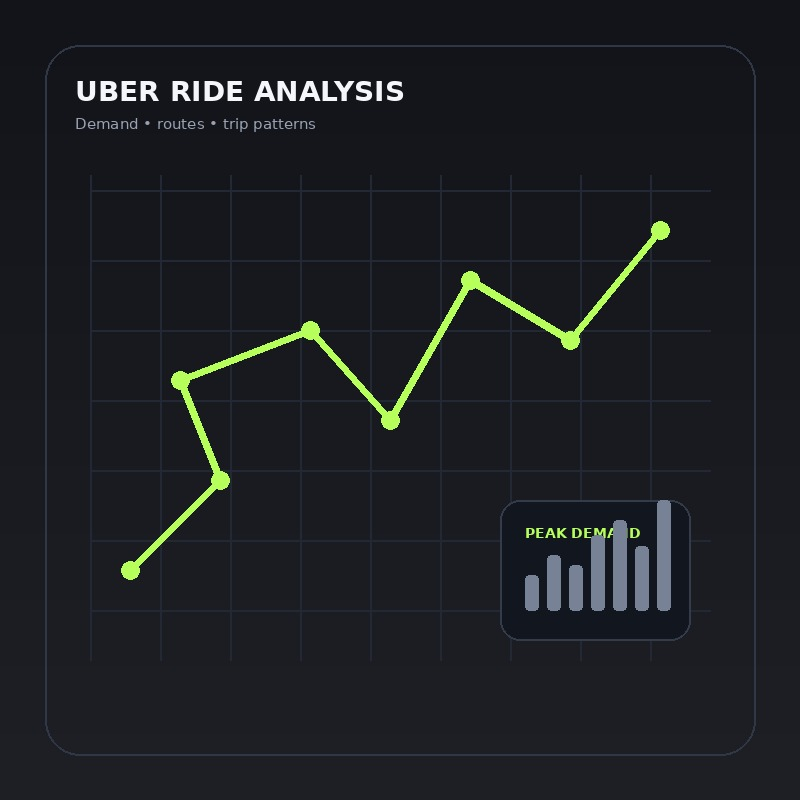
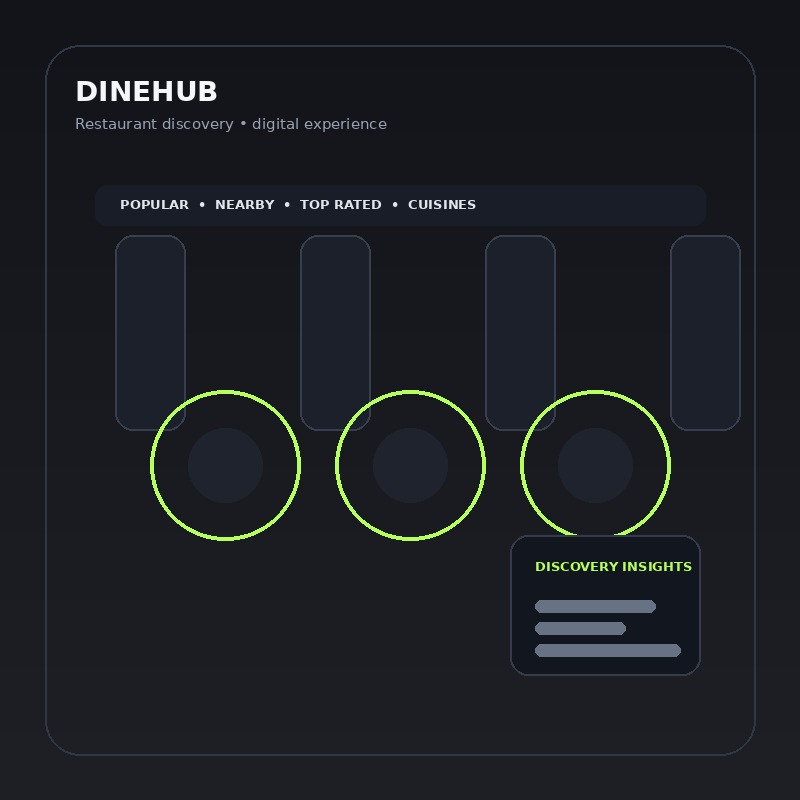
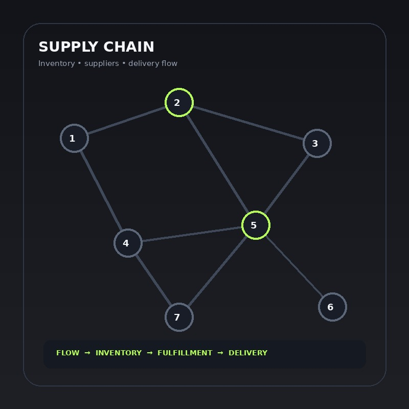

Programming
PythonSQLJava
I like finding the story inside data — from messy datasets and hidden patterns to practical solutions that can actually make a difference.
I'm a B.Tech IT student building my journey toward Data Science. What excites me most is taking a real problem, exploring the data behind it, finding patterns others might miss, and turning those findings into something useful. I'm growing across analytics, machine learning and data-driven problem solving — one project at a time.

Uncovered the operational factors behind longer patient waits and highlighted bottlenecks that can support smoother patient flow and resource allocation.
⌘ GitHub ↗
Found demand and trip patterns across ride data, turning raw journeys into insights that can support smarter operational planning.
⌘ GitHub ↗
Focused on making restaurant discovery and ordering simpler through a clean, user-friendly digital experience.
⌘ GitHub ↗
Explores supply, inventory and delivery patterns to reveal operational bottlenecks and opportunities to improve efficiency.
⌘ GitHub ↗Worked hands-on with data analysis tasks, exploring datasets and translating findings into practical insights.
Applied machine-learning concepts to practical datasets and strengthened the process of turning data into predictive solutions.
Built practical Python solutions while strengthening programming logic, problem-solving and hands-on development skills.
Certificate
View certificate ↗Certificate
View certificate ↗Certificate
View certificate ↗Certificate
View certificate ↗Certificate
View certificate ↗Interested in internships, collaborations or building something around data? Let's connect.